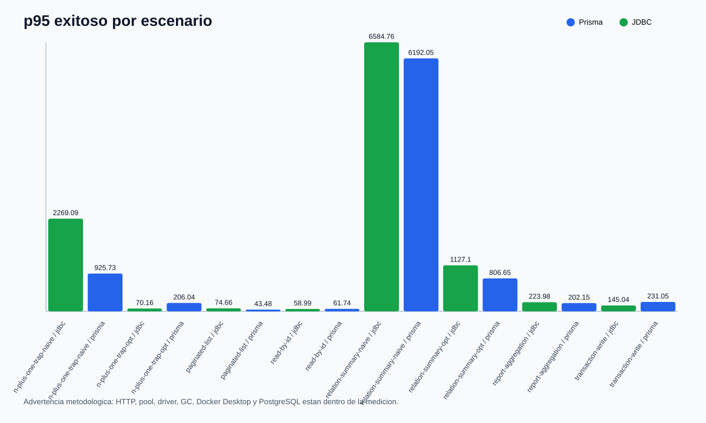
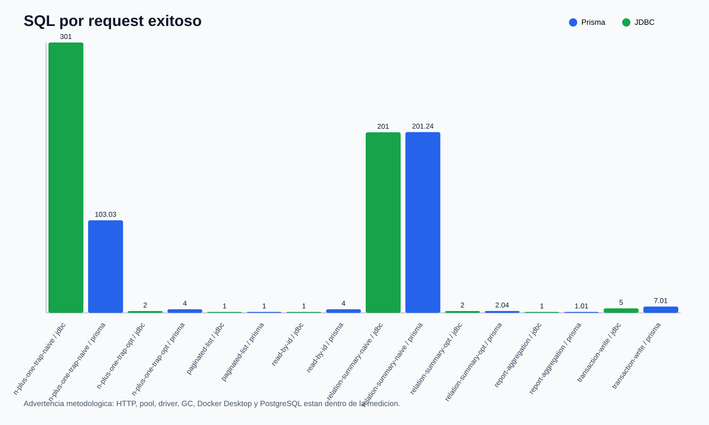
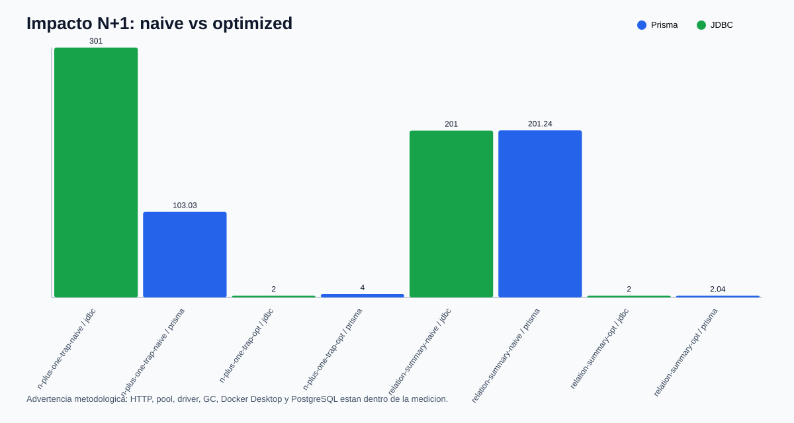
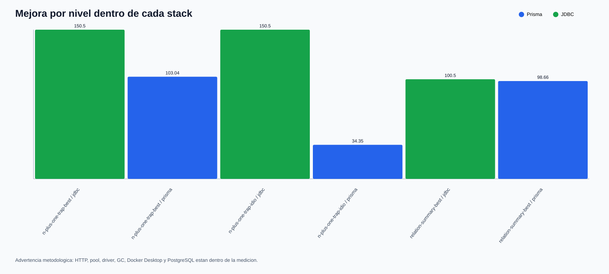
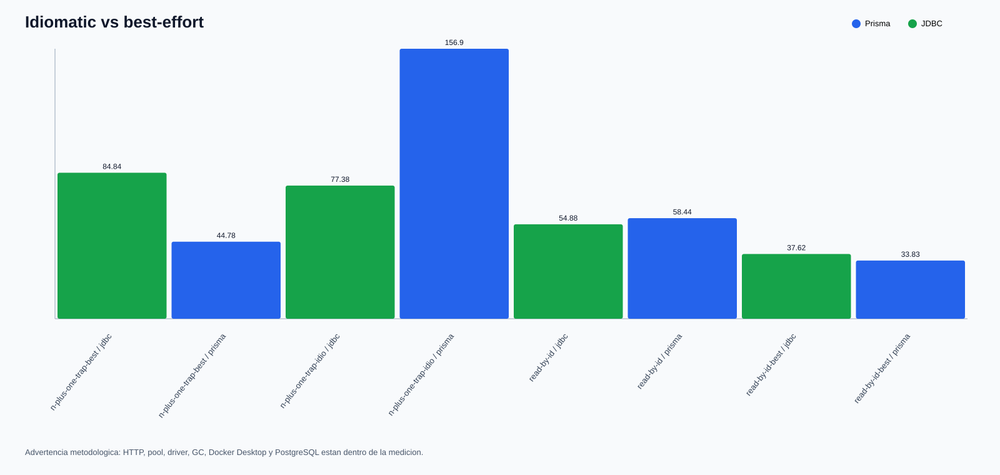

p95 exitoso por escenario

SQL por request exitoso

Impacto N+1: naive vs idiomatic/best-effort

Mejora por nivel dentro de cada stack

Idiomatic vs best-effort

Resumen editorial
El patron importante es que optimizar el shape cambia mas que discutir el runtime en abstracto.
| scenario | level | stack | p95 ms | rps | SQL/request |
|---|---|---|---|---|---|
| n-plus-one-trap-best-effort | best-effort | jdbc | 84.84 | 425.99 | 2 |
| n-plus-one-trap-best-effort | best-effort | prisma | 44.78 | 528.24 | 1 |
| n-plus-one-trap-idiomatic | idiomatic | jdbc | 77.38 | 380.91 | 2 |
| n-plus-one-trap-idiomatic | idiomatic | prisma | 156.9 | 160.73 | 3 |
| n-plus-one-trap-naive | naive | jdbc | 1775.81 | 13.93 | 301 |
| n-plus-one-trap-naive | naive | prisma | 908.93 | 22.71 | 103.04 |
| paginated-list | idiomatic | jdbc | 49.53 | 569.6 | 1 |
| paginated-list | idiomatic | prisma | 31.87 | 660.84 | 1 |
| read-by-id | idiomatic | jdbc | 54.88 | 584.55 | 1 |
| read-by-id | idiomatic | prisma | 58.44 | 420.68 | 4 |
| read-by-id-best-effort | best-effort | jdbc | 37.62 | 741.06 | 1 |
| read-by-id-best-effort | best-effort | prisma | 33.83 | 750.64 | 1 |
| relation-summary-best-effort | best-effort | jdbc | 969.55 | 30.65 | 2 |
| relation-summary-best-effort | best-effort | prisma | 791.46 | 30.79 | 2.04 |
| relation-summary-naive | naive | jdbc | 7407.76 | 3.21 | 201 |
| relation-summary-naive | naive | prisma | 6249.24 | 3.08 | 201.26 |
| report-aggregation-best-effort | best-effort | jdbc | 211.83 | 118.8 | 1 |
| report-aggregation-best-effort | best-effort | prisma | 189.51 | 127.59 | 1.01 |
| transaction-write | idiomatic | jdbc | 86.41 | 328.69 | 5 |
| transaction-write | idiomatic | prisma | 86.86 | 253.35 | 7 |